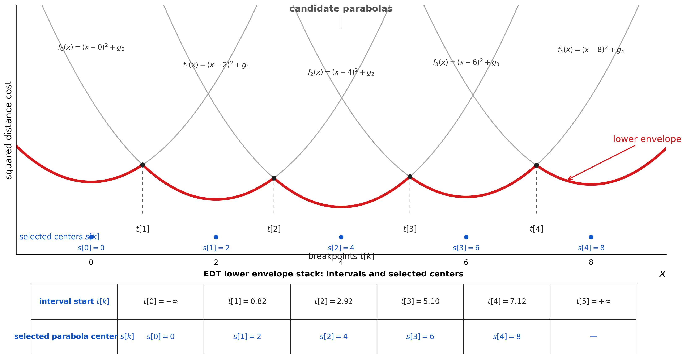

# ESDF 的构建ESDF 用于回答一个比 OccupancyGrid 更连续的问题：
1 2 当前位置离最近障碍物有多远？ 距离场梯度指向哪里？
在导航框架中，它被 B 样条优化、NMPC 障碍物代价和脱困搜索使用。
# 1、EDT 与 ESDF
EDT：Euclidean Distance Transform，是计算距离场的算法。
ESDF：Euclidean Signed Distance Field，是计算得到的距离场表示。
当前代码中：
1 2 3 EsdfMap::buildFromOccupancy () -> computeEDT () -> distance_
其中 computeEDT() 是 EDT 算法， distance_ 是距离场数据。严格来说，当前项目实现的是 2D 非负距离场，不计算障碍物内部负距离，因此更接近 unsigned ESDF。
# 2、数据结构核心文件：
1 src/my_navigation/nav_components/include/nav_components/esdf_map.hpp
核心成员：
1 2 3 4 5 6 std::vector<float > distance_; int width_;int height_;double resolution_;double origin_x_;double origin_y_;
distance_ 是 row-major 一维数组：
1 2 idx = y * width_ + x; distance_[idx] = 当前 cell 到最近障碍物的距离，单位 m;
地图参数继承自输入的 OccupancyGrid ：
1 2 3 4 5 width_ = grid->info.width; height_ = grid->info.height; resolution_ = grid->info.resolution; origin_x_ = grid->info.origin.position.x; origin_y_ = grid->info.origin.position.y;
ESDF 从 fused_map_ 构建，而不是从膨胀后的 costmap_ 构建：
1 esdf_->buildFromOccupancy (fused_map_, obstacle_threshold_);
# 3、输入语义OccupancyGrid 中：
1 2 3 0 = free 100 = occupied -1 = unknown
在 ESDF 初始化时：
1 temp[idx] = (val >= threshold || val < 0 ) ? 0.0f : INF;
因此：
1 2 3 occupied -> 障碍源，距离 0 unknown -> 障碍源，距离 0 free -> INF
动态层中的 unknown 不会进入融合图，因为融合时跳过 local_val <= 0 ：
1 2 3 if (local_val <= 0 ) { continue ; }
所以当前主要影响 ESDF 的 unknown 来自静态地图。
# 4、数学基础ESDF 要计算：
D ( x , y ) = min ( x o , y o ) ∈ O ( x − x o ) 2 + ( y − y o ) 2 D(x,y)=\min_{(x_o,y_o)\in O}
\sqrt{(x-x_o)^2+(y-y_o)^2}
D ( x , y ) = ( x o , y o ) ∈ O min ( x − x o ) 2 + ( y − y o ) 2
直接遍历所有障碍物复杂度太高。关键是使用平方距离：
D 2 ( x , y ) = ( x − x o ) 2 + ( y − y o ) 2 D^2(x,y)=(x-x_o)^2+(y-y_o)^2
D 2 ( x , y ) = ( x − x o ) 2 + ( y − y o ) 2
平方欧氏距离可以按坐标轴分解，因此可以用两次一维距离变换完成二维 EDT。
# 5、第一步：沿列扫描初始化：
1 2 3 4 5 6 7 8 9 10 const float INF = 1e9f ;std::vector<float > temp (width_ * height_) ;for (int x = 0 ; x < width_; x++) { for (int y = 0 ; y < height_; y++) { int idx = y * width_ + x; int8_t val = occ[idx]; temp[idx] = (val >= threshold || val < 0 ) ? 0.0f : INF; } }
然后对每一列做上下两次扫描：
1 2 3 4 5 6 7 8 9 10 11 12 13 for (int y = 1 ; y < height_; y++) { int idx = y * width_ + x; if (temp[idx] > temp[idx - width_] + 1.0f ) { temp[idx] = temp[idx - width_] + 1.0f ; } } for (int y = height_ - 2 ; y >= 0 ; y--) { int idx = y * width_ + x; if (temp[idx] > temp[idx + width_] + 1.0f ) { temp[idx] = temp[idx + width_] + 1.0f ; } }
这一步得到：
1 temp[x,y] = 当前 cell 到同一列最近障碍的纵向距离，单位是 cell
例如：
1 2 3 4 y: 0 1 2 3 4 5 6 障碍: . . X . . . X 初始: I I 0 I I I 0 扫描后: 2 1 0 1 2 1 0
# 6、第二步：按行求抛物线下包络固定某一行 y 。第一步已经给出每一列 i 的纵向最近障碍距离：
d y i = t e m p [ y , i ] dy_i = temp[y,i]
d y i = t e m p [ y , i ]
对于当前行上的位置 x ，如果选择第 i 列背后的障碍作为候选障碍，则平方距离为：
f i ( x ) = ( x − i ) 2 + d y i 2 f_i(x)=(x-i)^2+dy_i^2
f i ( x ) = ( x − i ) 2 + d y i 2
这是一条抛物线。真正的距离是所有候选的最小值：
D 2 ( x , y ) = min i ( ( x − i ) 2 + d y i 2 ) D^2(x,y)=\min_i\left((x-i)^2+dy_i^2\right)
D 2 ( x , y ) = i min ( ( x − i ) 2 + d y i 2 )
因此问题变为：对一组抛物线求下包络。

代码使用两个数组维护下包络：
1 2 std::vector<int > s (width_ + 1 ) ;std::vector<float > t (width_ + 2 ) ;
含义：
1 2 s[k] = 第 k 条有效抛物线来自哪一列 t[k] = 这条抛物线从哪个 x 开始成为最小值
可以理解为：
1 2 3 4 5 起点 t[k] 使用候选列 s[k] --------------------------- -inf 2 5.0 8 12.5 15
两条候选抛物线：
f i ( x ) = ( x − i ) 2 + g i f_i(x)=(x-i)^2+g_i
f i ( x ) = ( x − i ) 2 + g i
f j ( x ) = ( x − j ) 2 + g j f_j(x)=(x-j)^2+g_j
f j ( x ) = ( x − j ) 2 + g j
求交点：
( x − i ) 2 + g i = ( x − j ) 2 + g j (x-i)^2+g_i=(x-j)^2+g_j
( x − i ) 2 + g i = ( x − j ) 2 + g j
展开后二次项抵消：
x = j 2 + g j − i 2 − g i 2 ( j − i ) x=\frac{j^2+g_j-i^2-g_i}{2(j-i)}
x = 2 ( j − i ) j 2 + g j − i 2 − g i
代码中对应：
1 2 3 4 5 6 float fx = temp[y * width_ + x];float fv = temp[y * width_ + s[k]];float intersection = ((fx * fx + x * x) - (fv * fv + s[k] * s[k])) / (2.0f * (x - s[k]));
如果新抛物线的交点早于旧抛物线的生效起点，说明旧抛物线被完全覆盖：
1 2 3 4 while (intersection <= t[k]) { k--; }
保留下来的新抛物线写入：
1 2 3 4 k++; s[k] = x; t[k] = intersection; t[k + 1 ] = INF;
这个过程本质是一个单调栈：每条抛物线最多入栈一次、出栈一次，因此每行复杂度是 O ( W ) O(W) O ( W )
# 7、填充距离场下包络建立后，从左到右查询每个位置：
1 2 3 4 5 6 7 8 9 10 11 12 k = 0 ; for (int x = 0 ; x < width_; x++) { while (t[k + 1 ] < x) { k++; } float dx = x - s[k]; float dy = temp[y * width_ + s[k]]; distance_[y * width_ + x] = std::sqrt (dx * dx + dy * dy) * resolution_; }
其中：
1 2 3 s[k] = 当前 x 对应的最近候选列 dx = 横向距离 dy = 第一步得到的纵向距离
最后乘 resolution_ ，将 cell 距离转换为米。
# 8、查询距离和梯度离散查询：
1 2 3 int ix = static_cast <int >((x - origin_x_) / resolution_);int iy = static_cast <int >((y - origin_y_) / resolution_);dist = distance_[iy * width_ + ix];
连续查询使用双线性插值：
1 2 3 4 d = (1 - tx) * (1 - ty) * d00 + tx * (1 - ty) * d10 + (1 - tx) * ty * d01 + tx * ty * d11;
梯度使用三点二次拟合。以 x 方向为例：
1 2 3 4 5 6 7 8 float d_l = distance_[iy * width_ + (ix - 1 )];float d_c = distance_[iy * width_ + ix];float d_r = distance_[iy * width_ + (ix + 1 )];double ax = 0.5 * (d_l + d_r) - d_c;double bx = 0.5 * (d_r - d_l);grad_x = (2.0 * ax * dx + bx) / resolution_;
y 方向同理。梯度指向距离增大的方向，也就是远离障碍物的方向。
# 9、和 Fast-Planner 的关系当前项目和 Fast-Planner 的核心思想相同，都是利用平方欧氏距离的可分离性，通过一维距离变换和抛物线下包络构建距离场。
区别是：
1 2 3 4 5 6 7 8 9 10 11 12 13 当前项目： 2D fused OccupancyGrid -> Y 方向扫描 -> X 方向下包络 -> 2D 非负距离场 Fast-Planner： 3D occupancy voxel map -> Z 方向 EDT -> Y 方向 EDT -> X 方向 EDT -> 再计算 negative distance -> 3D signed distance field
# 10、小结ESDF 构建的核心可以概括为：
1 2 3 4 欧氏距离平方可以按坐标轴分解。 第一步沿列计算纵向最近障碍距离。 第二步固定每一行，把每列候选写成抛物线。 对抛物线求下包络，就等价于求最近二维障碍距离。
OccupancyGrid 只能回答 “这里是不是障碍”，而 ESDF 可以回答 “离障碍有多远、往哪里走能远离障碍”。这就是它能服务于 B 样条优化和 NMPC 避障的原因。